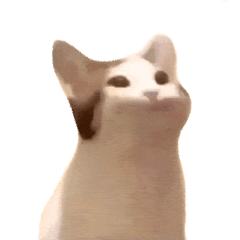
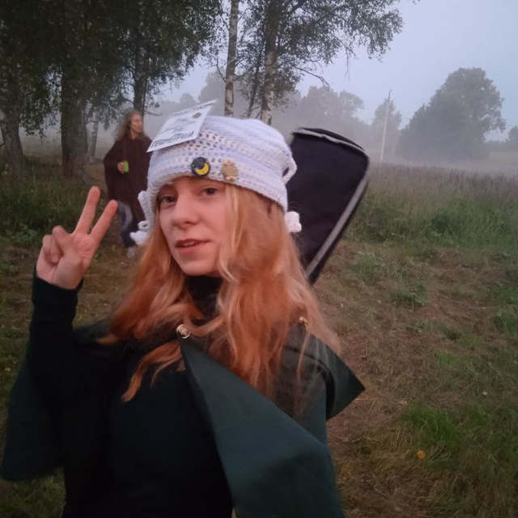
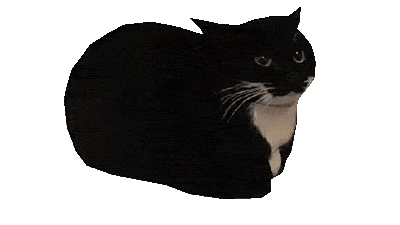
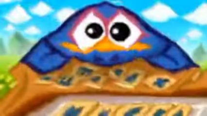

Место учебы
Фундаментальная и прикладная лингвистика, НИУ ВШЭ, Москва
Человек, не умеющий вставать вовремя



Фундаментальная и прикладная лингвистика, НИУ ВШЭ, Москва
Пущино (лучший город на земле)
Общеобразовательная школа №3 города Пущино
ЦПМ

Киндер Пингви
Я огромный фанат музыкальной группы Lovejoy(заголовок это первая строчка одной из их песен хихи)
поэтому я выучилась играть на гитаре сама. То, что я закончила музыкалку довольно сильно кстати помогло, хоть я и заканчивала по классу фортепиано(а арфа в гробу это рояль)
Вот одна из любимейших моих песен, Portrait of a blank slate:
всегда всем советую эту группу, правда у её вокалиста в какой-то момент возникло contoversy, хотя это скорее уже полноценная травля в интернете за то, что оказалось неправдой... кривдой
хотя сейчас уже ситация получше
в общем я могу во всех подробностя рассказать что произошло, но наверное не всем будет инетересно
изначально я физмат/матинфо, училась в инфоклассе цпма и сдавала физику
а потом случился кризис идентичности и высшая проба по руссому языку
и вот я здесь...
помимо лингвистики ещё очень люблю биологию, поэтому уже решила, что пойду на нейротрек
увлекаюсь фотографией, недавно подавалась в экстру на должность фотографа, делала портфолио с любимыми фотками
В целом люблю заниматься творчеством, играть в игры(и компьютерные, и настольные), раньше ещё аниме смотрела, сейчас как-то нет времени. Зато время есть проходить deltarune и Hollow Knight Silksong
А ещё я учу финский!! Он мне очень нравится, надеюсь скоро смогу читать Калевалу в оригинале
Кроме Lovejoy кстати ещё люблю дайте танк(!), 26 сентрября иду к ним на концерт!! Мечтаю как-нибдь и к лавджоям попасть, но они пока в Россию приезжать не планируют
Ещё несколько фанфактов: я очень люблю смешариков, недавно была на их концерте, и почти все актёры озвучки подписали мой чехол.
А ещё а одной летней школе мы ставили серию смешариков "Эрудит" и я играла карыча(у меня была лучшая роль, прокричать "КАКАЯ ЕЩЁ ФИЖМА")
